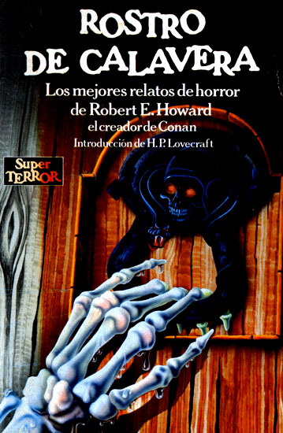
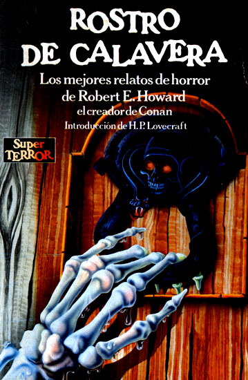

¿Que es Shoggotheria?
Shoggotheria es una pagina que realiza una especie de recopilatorio de las las obras más importantes de horror cosmico en conjunto con información de sus autores.
Libros
El horror cósmico es un género de terror creado por el escritor estadounidense H. P. Lovecraft después de sufrir terribles pesadillas cuando era niño. Un tipo de historias que huían del horror gótico y cuyos monstruos son dioses de otros tiempos y espacios.
 



Autores
La autores son más conocidos como los miembros del circulo de lovecraft que es un movimiento literario de escritores principalmente de la llamada weird fiction y que por lo general publicaban en las revistas pulp, especialmente Weird Tales. A diferencia de lo que su nombre parece indicar, Lovecraft no ejercía una influencia como líder, sino como aglutinador y nexo común entre estos autores, varios de los cuales ya tenían una carrera literaria previa y cuya entrada en el Círculo comprendía sólo una parte de su obra.